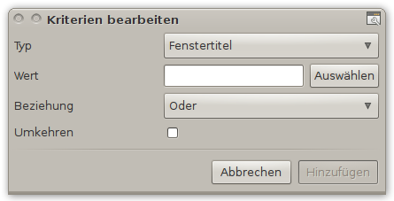
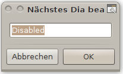

CCSM Benutzung
Dieser Artikel wurde für die folgenden Ubuntu-Versionen getestet:
Ubuntu 14.04 Trusty Tahr
Achtung!
Falsch gewählte Einstellung können im schlechtesten Fall dazu führen, dass Compiz nicht mehr korrekt startet. Daher sollte hier immer mit Bedacht vorgegangen werden.
 Der CompizConfig Einstellungs-Manager (abgeleitet aus der Paketbezeichnung nachfolgend mit "CCSM" abgekürzt) bietet umfangreiche Möglichkeiten, das Verhalten auf dem Bildschirm, das Aussehen diverser Komponenten sowie die Eingriffe durch die Tastatur und die Maus einzustellen.
Der CompizConfig Einstellungs-Manager (abgeleitet aus der Paketbezeichnung nachfolgend mit "CCSM" abgekürzt) bietet umfangreiche Möglichkeiten, das Verhalten auf dem Bildschirm, das Aussehen diverser Komponenten sowie die Eingriffe durch die Tastatur und die Maus einzustellen.
Dieser Abschnitt befasst sich damit, wie man die Einstellungen "handwerklich" ausführen kann und ist als Ergänzung des Artikels CCSM konzipiert.
Einstellungen ausführen¶
Die Bearbeitung / Einstellung der Optionen erfolgt auf verschiedene Art und Weise. Die Beispiele (Bildschirmfotos) basieren auf Ubuntu 10.04. Das Aussehen und die Anordnung sind in neueren Ubuntu-Versionen zwar leicht verändert, die Funktionen als solche sind aber gleich.
Hinweis:
Für alle Optionen gilt, dass wenn man mit dem Mauszeiger über die Bezeichnung der Option fährt, in der Regel ein PopUp aufgeht und für diese Option weitere Informationen bereitstellt.
Die Angaben in den Zeilen zur jeweiligen Option muss man immer im Kontext zur übergeordneten Einbindung sehen - beispielhaft:
Optionsgruppe -> z.B.: "Arbeitsfläche"
"Desktoptafel"
Reiter / Tab -> "Tastenkombination"
+ -> "Bewegung innerhalb der Arbeitsfläche"
Option mit "Art", "Titel" und Einstellung
Nur so lässt sich die erforderliche Einstellung im System zuordnen und verstehen und damit Fehleinstellungen vermeiden.
Interne Einstellungen¶
Bei diesen Einstellungen kann man Compiz für seine Zwecke anpassen und mit diesen Einstellungen benutzen. Eine Veränderung während der Sitzung ist nicht vorgesehen. Den Zustand der Option kann man direkt am Funktionsfeld ablesen und seinen Wünschen entsprechend verändern.
| Funktion | Beschreibung |
| Aktivieren | |
Die meisten Einstellungen erfolgen über eine Aktivierung bzw. Deaktivierung. Neben dem Text zur Beschreibung dieser Option auf der linken Seite befindest sich rechts die Information, ob diese Option gesetzt ist oder nicht. Man kann durch Anklicken mit der  den Zustand ändern. den Zustand ändern. | |
| Löschen | |
| Dieses Icon repräsentiert eine Löschfunktion und ist bei fast allen Einstellungen vorhanden. Man kann durch Anklicken mit der den Grundzustand für die jeweilige Option wieder herstellen. | |
| Wert eingeben | |
| Mit gedrückt gehaltener auf dem Reglersymbol und Verschieben mit dem Mauszeiger kann man den Wert für eine Option verändern. Die Werte können in den vorgegebenen Grenzen (Minimalwert / Maximalwert) frei bewegt werden. | |
| Alternativ bzw. zur korrekten Einstellung kann man den Wert auch über das Wertefeld mit der Tastatur direkt eingeben - abgeschlossen wird das dann mit der ⏎ -Taste. | |
| freien Text eingeben | |
In der Regel stehen diese Art Eingabe zur Übergabe von Befehlen bereit und dieses erfolgt direkt in das Eingabefeld. Welche Eingabe gefordert wird, ist im jeweiligen PopUp der Option beschrieben. Hinweis:Eine Syntax-Überprüfung der Eingabe erfolgt in der Regel nicht. | |
| formatierten Text eingeben | |
| Hier kann man formatierten Text eingeben, jedoch nicht direkt. Der Aufruf erfolgt über eine Auswahl: Neu bzw. nach Anklicken mit der (einer Zeile mit Inhalt) mit "Bearbeiten". Es wird dann eine Eingabemaske angezeigt, in der man die erforderlichen Daten eingeben kann. | |
| Nach der Eingabe wird über "Schließen" diese Eingabe abgeschlossen, intern die Syntax überprüft und in die obige Zeile aufgenommen. Weiter sind noch die Schalter "Löschen", "Hoch" und "Runter" für die Bearbeitung einer ausgewählten Zeile vorhanden. | |
| Verzeichnis eingeben | |
| Wird die Angabe eines Verzeichnisses gefordert, so kann man dieses entweder direkt in die Eingabezeile eingeben - abgeschlossen wird das dann mit der ⏎ -Taste. | |
| Der bessere Weg, auch um Schreibfehler zu vermeiden ist es, über das Ordnersymbol die normale Suchmaske für Verzeichnisse aufzurufen. In dieser kann man sich dann bis zum Verzeichnis / zur Datei durchklicken und mit "Öffnen" den Pfad bzw. die Datei übernehmen. Danach wird dieser Pfad in der Eingabezeile angezeigt. | |
| DropDown Auswahl | |
| Man öffnet ein DropDown durch Anklicken mit der auf die Zustandsanzeige und erhält wie im Beispiel folgende Anzeige: | |
| Nun klickt man mit der auf die Maßnahme, die für die eigenen Bedürfnisse erwünscht ist. | |
| Farben eingeben | |
| Man kann durch Klicken mit der auf den Schalter eine Farbauswahlbox aufrufen und in dieser die erforderlichen Einstellungen für die Farben und auch die Transparenz (Deckkraft) vornehmen. | |
Fenstermanagement¶
Mit den Fenstern kann man diverse Effekte auf der Arbeitsfläche vornehmen - man kann diese Effekte jedoch auf bestimmte Fenster beschränken / eingrenzen. Dazu müssen diese Fenster identifiziert werden bzw. dessen Merkmale hier eingegeben werden.
Hinweis:
Fenster / Objekte, deren Merkmale man erfassen will, müssen (zumindest in Teilen) sichtbar auf der Arbeitsfläche liegen
| Funktion | Beschreibung | |||||
| Fenster allgemein zuordnen | ||||||
| Man kann die bisher eingetragenen, allgemeinen Zuordnungen zu einer Anzeige / Aufgabe hier nachlesen und wenn erforderlich, auch gleich direkt in der Zeile ändern / ergänzen. | ||||||
Wenn man sich nicht sicher ist, sollte man durch Anklicken des  mit der -Taste, die Bestimmung bzw. Zuordnung vorzunehmen. Es öffnet sich dann eine Eingabemaske: mit der -Taste, die Bestimmung bzw. Zuordnung vorzunehmen. Es öffnet sich dann eine Eingabemaske: | ||||||
| Merkmale erfassen |  | |||||
| Typ | In einem DropDown kann man verschiedene Typen zur Identifizierung der Objekte aussuchen. | |||||
| Die Bestimmung der Merkmale kann man dabei nach Fenstertitel, "Fensterklasse", "Fensterfunktion", "Fensterklassenname", "Fenstertyp", "Fenster-ID" vornehmen. | ||||||
| Wert | Entweder man trägt in die Eingabezeile einen bekannten Wert ein oder benutzt den Button "Auswählen" (mit anklicken) und geht mit dem zum Kreuz veränderten Mauszeiger auf das zu bestimmende Objekt und klickt dieses mit der -Taste an. | |||||
Hinweis:Wenn hierbei kein Eintrag übernommen wurde, sollte man den Fenster-"Typ" (siehe oben) wechseln. | ||||||
| Beziehung | Hiermit kann man entweder eine "Und" oder eine "Oder" Verknüpfung mit anderen Objekten einstellen, um die Abarbeitung eindeutig zuordnen zu können. | |||||
| Umkehren | Hiermit kann man die obige Beziehung logisch umkehren (Nand / Nor). | |||||
| Fenster speziell zuordnen | ||||||
| Man kann je Fenster die Merkmale ablesen, die Merkmale bearbeiten und neue hinzufügen. Der Aufruf erfolgt über eine Auswahl: "Neu" bzw. nach Anklicken mit der (einer Zeile mit Inhalt) mit "Bearbeiten". Es werden dann je nach Art der der Einstellung nachfolgende, spezielle Eingabemasken angezeigt. | ||||||
| Weiter sind noch die Schalter "Löschen", "Hoch" und "Runter" für die Bearbeitung einer ausgewählten Zeile vorhanden. | ||||||
Hinweis:Die Informationen oberhalb der Eingabezeile sind abhängig von der jeweiligen Funktion, die eingestellt werden soll und geben Auskunft darüber, welche Werte hier abgefragt werden. | ||||||
| Spezielle Fenstereinstellungen |
|
| ||||
|
|
| |||||
|
| ||||||
| Für jede dieser Eingabemasken gilt für die Zuordnung eines Fensters / Objektes: Entweder man trägt in die Eingabezeile einen bekannten Wert ein oder | ||||||
| man nimmt durch Anklicken des mit der -Taste, die Bestimmung bzw. Zuordnung vor. Es öffnet sich dann eine Eingabemaske, die oben unter Merkmale erfassen beschrieben wird und man erfasst damit die Daten. | ||||||
Hinweis:Die Daten für die Arbeitsfläche richten sich nach den Einstellungen für die Desktop-Größe! | ||||||
Einstellung MMI¶
Die Einstellungen, die ein Mensch-Maschine-Interface (MMI) darstellen und eine Steuerung des laufenden Systems jeweils über entsprechende Eingaben sicherstellen, befinden sich in den folgenden Optionstypen. Hier wird neben der Beschreibung / dem Titel der Option eine Auswahl angeboten, die zwar den momentanen Zustand anzeigt - aber um diesen zu verändern, muss man in der Regel eine weitere Eingabemaske aufrufen.
Erläuterungen einer Zeile¶
| Funktion | Beschreibung |
| Beispiel einer Zeile | An diesem Beispiel lässt sich die generelle Anzeige einer Option beschreiben, wie diese für die Einstellungen einer Tastenkombination bzw. der Einstellungen für eine Mausaktivitäten sich darstellt. Die folgende Erläuterung orientiert sich am folgenden Beispiel (von links nach rechts): |
| Tastensymbol | bzw. ein Monitorsymbol oder Maussymbol an dieser Stelle: |
| Je nach Symbol handelt sich um die Einstellung einer Tastenkombination, einer Maus-Tastenkombination bzw. Mauszeigeraktivität, mit der eine bestimmte Aktion, die in der Regel im Namen der Option angedeutet wird, eingestellt werden kann. | |
| Bezeichnung | Hiermit wird die Option grob im Kontext zu ihrer Position im CCSM beschrieben. Weitere Informationen erhält man über ein Pop-Up, sobald man mit dem Mauszeiger über diese Zeile fährt. |
| Schalter | Hier wird in der Regel die momentan eingestellte Tastenkombination, Maus-Tastenkombination bzw. Aktivität des Mauszeigers angezeigt. "Deaktiviert" zeigt an, dass keine Einstellung vorgenommen wurde oder dass dieses die Standardvorgabe ist. |
| Klickt man diesen Button mit der an, so öffnet sich | |
| - eine zur Einstellung passende Auswahlbox, in der man dann die Einstellungen vornehmen kann (siehe weiter unten). | |
| - sofern noch ein "Deaktiviert" auf dem Button zu lesen war, eine Zwischenbox, die vor der Aktivierung einer Tastenkombination nachfragt. Erst wenn man hier das Häkchen zu Aktivierung setzt und mit "OK" bestätigt, wird die passende Auswahlbox aufgerufen (siehe weiter unten). | |
| Bleistift |  Hier kann man sich in einer neuen Maske die genaue Schreibweise der Einstellung anzeigen lassen und diese ggf. auch gleich abändern. Hinweis:Die Bezeichnungen auf den Schaltern (z.B.: deutsch) können von der Schreibweise im Schalter abweichen. Diese interne Schreibweise entspricht der (englischen) Programmsprache. |
| Löschsymbol | Dieses Icon repräsentiert eine Löschfunktion und ist bei fast allen Einstellungen vorhanden. Man kann durch Anklicken mit der den Grundzustand für die jeweilige Option wieder herstellen. |
Tastenkombination¶
Die Auswahlbox für eine Tastenkombination stellt sich wie folgt dar:
| Auswahlbox | Beschreibung |
 | Darin bedeuten (von oben nach unten): |
| Aktiviert: Zeigt den aktuellen Status an. Hier kann man durch Anklicken mit der den Status deaktivieren. Die Anzeige springt dann auf die Zwischenbox zurück (siehe oben -> Erläuterung einer Zeile -> Schalter) | |
| Die vier Tastensymbole zeigen durch ihre Einfärbung den Zustand an | |
| -> schwarz bedeutet, die Taste ist nicht mit einbezogen | |
| -> grün zeigt an, dass diese Taste in die Kombination mit einbezogen ist. | |
| Klickt man mit der den Button "Tastenkombination auswählen", so kann man neben den vier angezeigten Taste auch noch andere Tasten mit einbeziehen. | |
Mit <Alt>F7 wird die im Beispiel eingestellte Tastenkombination angezeigt. | |
| Mit "Abbrechen" wird der Einstellungsvorgang abgebrochen und die alte Einstellung beibehalten. Mit der Schaltfläche "OK" wird die angezeigte Einstellung übernommen. | |
Mauszeiger Aktivitäten¶
Die Auswahlbox für die Mauszeiger-Aktivität stellt sich wie folgt dar:
| Auswahlbox | Beschreibung |
| Darin bedeuten im Monitorbild: | |
| -> Roter Rand- bzw. Eckmarkierungen zeigen an, dass hierfür keine Zuordnung auf einen Mauszeiger eingestellt wurde | |
| -> Grüner Rand- bzw. Eckmarkierungen zeigen an, dass hierfür eine Zuordnung auf einen Mauszeiger eingestellt wurde. | |
| Um eine Zuordnung zu aktivieren bzw. zu deaktivieren klickt man mit der auf eines dieser Symbole, es wechselt dann die Farbe. | |
| Nach Auswahl der gewünschten Ecken bzw. Ränder wird dieser Vorgang mit der Schaltfläche "OK" abgeschlossen - mit "Abbrechen" wird diese Maske mit den alten Einstellungen wieder verlassen. | |
Maus-Tastenkombination¶
Diese Auswahlbox ist eine Zusammenfassung aus der reinen Tastaturkombination und der reinen Zuordnung für den Mauszeiger. Dieser spezielle Umfang ist erst voll nutzbar, wenn man als Steuergerät ein Grafik-Tablett anstelle bzw. zusätzlich von Maus und Tastatur einsetzt, z.B.: beim Einsatz für CAD- / CAM-Arbeitsplätze. Man kann eine Kombination aus allen drei Bereichen zusammenstellen.
| Auswahlbox | Beschreibung |
| Darin bedeuten (von oben nach unten): | |
| Aktiviert: Zeigt den aktuellen Status an. Hier kann man durch Anklicken mit der den Status deaktivieren. Die Anzeige springt dann auf die Zwischenbox zurück (siehe oben -> Erläuterung einer Zeile -> Schalter) | |
| Im Monitorbild: | |
| -> Roter Rand- bzw. Eckmarkierungen zeigen an, dass hierfür keine Zuordnung auf einen Mauszeiger eingestellt wurde | |
| -> Grüner Rand- bzw. Eckmarkierungen zeigen an, dass hierfür eine Zuordnung auf einen Mauszeiger eingestellt wurde. | |
| Um eine Zuordnung zu aktivieren bzw. zu deaktivieren klickt man mit der auf eines dieser Symbole, es wechselt dann die Farbe. | |
| Die Tastensymbole: | |
| -> schwarz bedeutet, die Taste ist nicht mit einbezogen | |
| -> grün zeigt an, dass diese Taste in die Kombination mit einbezogen ist. | |
| DropDown: (hier mit "Button3" ausgewiesen) | |
| Hier können bis zu 12 Buttons ausgewählt werden, dieses ist vom Konzept her für Steuergeräte im Bereich CAD / CAM reserviert. Jedoch kann man immer nur eine dieser Steuertasten zuordnen. | |
| Nach Auswahl der gewünschten Ecken bzw. Ränder wird dieser Vorgang mit der Schaltfläche "OK" abgeschlossen - mit "Abbrechen" wird diese Maske mit den alten Einstellungen wieder verlassen. | |
Links¶
intern¶
Compiz - ein Composite- und Fenstermanager
Plugins - eine Übersicht, wie Compiz aufgebaut ist
CCSM - das Werkzeug, um Compiz-Plugins einzustellen und nutzbar zu machen
 - Wiki, Übersicht Compiz
- Wiki, Übersicht Compiz 
- Erstellt mit Inyoka
-
 2004 – 2017 ubuntuusers.de • Einige Rechte vorbehalten
2004 – 2017 ubuntuusers.de • Einige Rechte vorbehalten
Lizenz • Kontakt • Datenschutz • Impressum • Serverstatus -
Serverhousing gespendet von